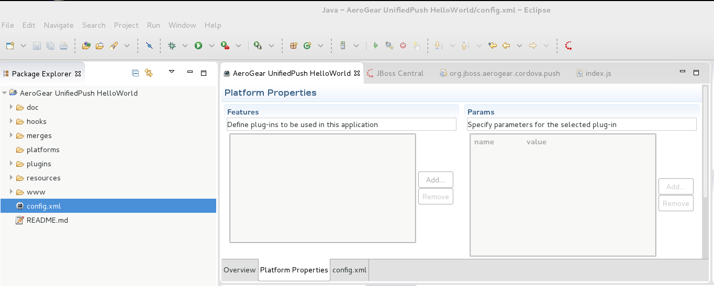

Author: Erik Jan de Wit (edewit)
Level: Beginner
Technologies: JavaScript Cordova
Summary: The push-helloworld-cordova quickstart shows how to use the JBoss Unified Push Cordova Push plug-in to register and receive push notifications.
Target Product: JBoss Unified Push
Versions: 1.0
Source: https://github.com/jboss-developer/jboss-mobile-quickstarts/
The push-helloworld-cordova quickstart demonstrates how to include basic push functionality in Cordova applications using the JBoss Unified Push Cordova Push plug-in.
This simple project consists of a ready-to-build Cordova application. Before building the application, you must register the Android or iOS variant of the application with a running JBoss Unified Push Server OpenShift instance and Google Cloud Messaging for Android or Apple Push Notification Service for iOS. The resulting unique IDs and other parameters must then be inserted into the application source code. After this is complete, the application can be built and deployed to Android or iOS devices.
When the application is deployed to an Android or iOS device, the push functionality enables the device to register with the running JBoss Unified Push Server instance and receive push notifications.
The Cordova command line tooling is based on node.js so first you’ll need to install node, then you can install Cordova by executing:
npm install -g cordova
To deploy on iOS you need to install the ios-deploy package as well
npm install -g ios-deploy
For iOS you’ll need a valid provisioning profile as you will need to test on an actual device (push notification is not available when using a simulator).
Replace the bundleId with your bundleId (the one associated with your certificate), by editing the config.xml at the root of this project, change the id attribute of the widget node. After that run a cordova platform rm ios followed by cordova platform add ios to change the Xcode project template.
If you want to change your bundleId later on, you will still have to run a cordova platform rm ios followed by cordova platform add ios to change the Xcode project template.
To deploy and run Cordova applications on Android, the Apache Ant tool needs to be installed.
For the configuration and registration of Android or iOS Applications with push services, please refer to the specific guides inside push-helloworld-android and push-helloworld-ios quickstarts.
In www/push-config.json change pushServerURL with the url of your Unified Push Server OpenShift instance. You also need to change senderID, variantID and variantSecret with the values assigned by Unified Push Server OpenShift instance and GCM or APNS:
{
"pushServerURL": "<pushServerURL e.g https://{OPENSHIFT_UNIFIEDPUSHSERVER_URL}/ag-push >",
"android": {
"senderID": "<senderID e.g Google Project ID only for android>",
"variantID": "<variantID e.g. 1234456-234320>",
"variantSecret": "<variantSecret e.g. 1234456-234320>"
},
"ios": {
"variantID": "<variantID e.g. 1234456-234320>",
"variantSecret": "<variantSecret e.g. 1234456-234320>"
}
}
Note: You can also copy/paste these settings from your Unified Push Server console
After changing the push configuration you can install the platforms you want on the Cordova app. JBoss Unified Push for Cordova currently supports Android and iOS.
cordova platform add <android or ios>
You now need to add the plugin to the Cordova app.
cordova plugin add `QUICKSTART_HOME/cordova_pushplugin/org.jboss.aerogear.cordova.push`
The application can be tested on physical Android or iOS devices only; push notifications are not available for Android emulators nor iOS simulators. To deploy, run and debug the application on an Android or iOS device attached to your system, on the command line enter the following:
cordova run <android or ios>
You can send a push notification to your device using the Unified Push Server console by completing the following steps:
Send Push.Applications list, select the application.Messages field, type the text to be sent as the push notification.Send Push Notification.When you start the application Cordova will fire a deviceready event when Cordova initialization is done and the device is ready (see www/js/index.js). On this event the register function will be executed registering the device with the JBoss Unified Push Server. The first argument is a function that gets executed when the device receives a push event, followed by a success and errorCallback that are invoked when the registration was successful or not and the last parameter is the push configuration that indicates where the push server is located and which variant/secret to use. When registration is successful it will display this on the UI. You can also verify that the registration was successful by going to the console. A new instance will appear with your deviceId, platform and status.
Import the generated project into JBDS:
Select the project location and project and click Finish:

In the newly imported project, open the config.xml file and click Add... in the Features section:

Choose Directory and point to the directory containing your plugin, then click Finish:

Run the project on a device:

Start a browser Chrome for Android or Safari for iOS
Follow the instructions for the mobile device
For iOS
Develop -> device name -> index.html
For Android
Menu -> Tools -> Inspect Devices -> inspect